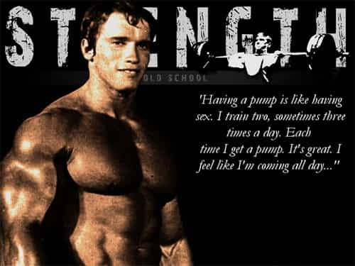

Catholic, Monarchist, Reactionary. When not writing I enjoy the finer things in life such as lifting weights, martial arts, shooting guns, and drinking whiskey.


As an avid gym enthusiast and observer of human nature I can’t help but see that most people are not putting in their full effort at the gym. It’s hard to not notice that most people are not training hard and are stuck in a sad world without gains. Thus I have taken it upon myself to provide for your benefit 15 tips on how to sharpen the mental edge and kill it working out.
You’re not going to your 9 to 5 wage slave paper pushing job here buddy. This is the gym! And what you do and don’t do inside this building actually matters. So you better put down that Starbucks frappachino pumpkin spice mocha latte and cranberry scone and come into this house with the right attitude. You slave all day and get an hour or two to work on yourself so you better show up here ready to put in the work. I want you to show up to the gym like a hungry dog ready to eat weights and defeacate results. If that isn’t your attitude there is a croquet club up the road that is looking for another soft turd of effeminacy to join.
The gym is the best part of your day, it’s the part of the day where nobody can give you crap, where you can do things with your body that most men can only dream of. It’s that time of day which empirically disproves feminism, where you can make women be in awe of the power your body possess. It’s that time of day where you put in so much manly work that you literally leave the building feeling high. If that doesn’t get you pumped up then you’ve been shopping in the soy section of the supermarket. You need to show up with that juice for attitude because what you take into the gym you take out of it.
Embrace your inner savage!
People who work at the gym have a pretty boring job, they are either there to fold towels and scan cards or to spot people. Be nice to these people and chat them up every now and then. Do this not only because it is a good thing to do but also because the gym is your home and you want to be walking into a place everyday where people are happy to see and talk to you. Trust me it will make your whole gym experience better and also its a good way to meet girls as a lot of the trainers and front desk staff can be quite attractive.
You want the hot girl at the front desk to be happy to see you right?
If you are like most corporate wage slaves, your day is already boring enough, so why make your workout boring as well? Be spontaneous, do things that challenge you, and always throw in something that is different.
Get a good pair of headphones and put on your music. Sometimes in between sets if my music hits it, I’ll bust out a dance move. Who cares? People sign up and pay money at the gym to go to lame dance classes with crappy music and boring routines. I’m having fun lifting weights and getting good at dancing at the same time.
Even better, most people who go to a club need to get drunk and still can’t muster up the courage to go out and dance. Why should anyone care what those people think? The point isn’t dancing though, the point is the gym is your time so make your time enjoyable and you will like being at the gym and your results will go up.

Heavy squats: another way to have fun!
Don’t be afraid of small increments. Too many people feel they need to advance in weight way to quickly. This can lead to a lot of plateaus. It’s important to realize that weight training is a long term process.
It’s easy to feel that you can always have the same rate of growth as when you first started lifting. However, as your body gets used to weights you will experience diminishing returns. So if you get caught up in thinking that you need to be jumping up in weight by throwing on an extra set of 10’s to your bench every other week, your going to quickly hit a wall.
Go for small increments of weight instead even if it means putting on 2.5 or even 1 pound weights onto your bench. It’s still more weight than you were lifting before and in a years time it will add up to really significant gains. For instance, adding 2.5 lbs plates every other week means over 100 lbs of gain on your bench in a year. Most people would kill for that!
Be happy it’s still half a pound more than you lifted last time

Your muscles should feel like blood balloons at the end of a good workout. This is called “the pump”. It doesn’t matter what you’re working—you need to feel this way at the end of your workout.
What it means is that you’ve worked your muscles hard enough to generate lactic acid. Essentially you’ve challenged your body and pushed it to a level where it knows it will have to come back stronger in order to deal with the stress again. This is how you get gains.
If you don’t feel the pump, or have never felt it, then you need to change your routine up. A pretty good way to get a pump is to drop the weight and do timed sets. Take an Olympic bar and do bicep curls for one minute straight. It doesn’t matter how many reps you get, for one minute do nothing except curl that bar. You will feel the pump in your arms.
Your attitude directly influences the quality of your training perhaps more than any other factor. You wouldn’t show up to a job interview with a pushover attitude would you? Would you ask that hot girl in yoga pants one size too tight out with half asked wimpy game? So bring your A-game to the gym because jobs and women come and go, but your body stays with you your whole life.
Read More: 5 Ways To Develop Discipline Instead Of Just “Getting Motivated”